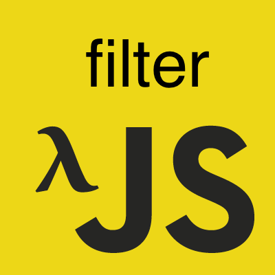

이 포스트는 인프런에서 진행한 유인동 님의 함수형 자바스크립트를 듣고 감명 받아서 쓴 글이다.
사실 underscore, lodash 등 함수형 패러타임으로 코드를 짤 수 있게 끔
미리 이런 함수들을 제공하는 라이브러리들을 쓰고, 이 포스트는 그닥 볼 필요가 없다.
하지만 이런 원리를 알고 접근을 하다보면 위 라이브러리를 쓴다고 하더라도 추가로 필요한 나의 코드를 함수형으로 더 짜기 유용하지 않을까?
filter
기본적으로 filter는 필터링, 조건에 맞는 녀석들만 걸러내서 새로운 데이터를 얻는 역할을 한다.
기존 프로그래밍
우선 서버와 ajax로 통신해서 db에서 다음과 같은 json 데이터를 얻어왔다고 가정해보자.
이 유저들 중에 40대 이상인 사람과 40대 미만인 사람을 구분하는 필터링을 구현해보자.
위 코드를 보니 반복문 구문과 새로운 배열에 만족하는 녀석들을 삽입하는 부분이 반복된다.
요것들을 어떻게 추상화 시켜서 재사용이 가능하게 끔 한번 해보고 싶어졌다.
우리가 기존에 객체 지향으로 프로그래밍을 했을 때는 조건문 부분은 추상화하기가 힘들다.
이런 간지러운 부분을 함수형으로 바꾸면 바로 해결이 가능하다.
함수형 프로그래밍
|
|
위에 _filter 함수를 보면 조건(predicate)를 함수의 인자로 받아서
그 내부가 어떻게 구현됐건 신경쓰지 않고 predicate 함수에게 배열의 요소만 넘겨서 조건이 참이면 새 배열에 넣게 끔 구현했다.
이렇게 _filter는 조건을 추상화, predicate 함수에게 위임했기 때문에 좀 더 사용성이 높아졌다.
위와 같이 짜게 되면 ArrayLike의 대표적인 케이스인 NodeList도 필터링이 가능하다.
그리고
predicate(item) && newList.push(item);
위 구문이 이해 안 가는 사람은 똑똑한 논리 연산자와 값 vs 식 vs 문을 참고해보자.
|
|
key와 value의 쌍으로 이루어져있는 돌림직한 객체를 필터링하는 것은 세미나에서 다루지 않았기 때문에 정리하지 않겠다.
key와 value의 쌍으로 이루어져있는 돌림직한 객체를 필터링하는 것은 예제가 잘 떠오르지 않고,
필요성을 잘 느끼지 못했기 때문에 정리하지 않도록 하겠다.
혹시 관련된 예제나 필요성 등등을 아신다면 댓글을… ^^
그럼 이제 바로 다음 포스트인 map을 공부해보자!